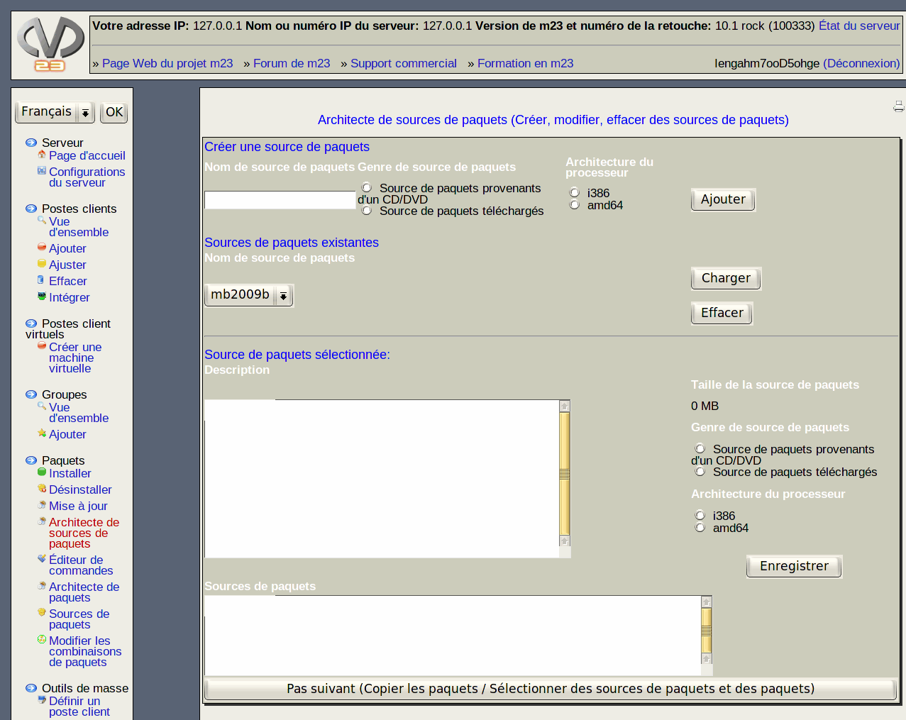

Le constructeur de sources de paquets vous permet de copier des paquets logiciels provenant de médias différents (CD, DVD, internet) sur le serveur m23 et de les transformer en une source de paquets. Cette nouvelle source de paquets peut être utilisée pour l'installation de vos postes client. Cela rend possible l'installation des postes client sans aucune connection internet. De cette façon, il est également possible de mettre des paquets que vous avez créés vous-mêmes dans le référentiel.
- Créer une nouvelle source de paquets: Vous pouvez créer une nouvelle source de paquets en entrant un nom dans le champ Nom de la source de paquets, ensuite choisissez le genre de source de paquets, puis cliquez sur Ajouter.
- Effacer ou charger une source de paquets: Sélectionnez la source de paquets à effacer ou charger dans la liste Sources de paquets existantes puis, cliquez sur l'action souhaitée.
- Source de paquets sélectionnée: Dans cette section, les informations sur la source de paquets sélectionnée sont affichées.
- Modifier la description ou le genre: Vous avez la possibilité d'entrer une description de votre source de paquets ou de changer son genre. Ensuite, cliquez sur Enregistrer.
- Sources de paquets: Là, vous voyez la liste des sources de paquets correspondant à votre source de paquets. Si vous voulez utiliser des paquets de votre provenance pour l'installation d'un poste client, copiez les lignes affichées et ajoutez-les à la liste des sources de paquets du poste client.
- Étape suivante: Finalement, cliquez sur ce bouton pour commencer la copie des paquets sur le serveur ou pour sélectionner les sources de paquets et les paquets.
Sous-sections
root
2015-04-30